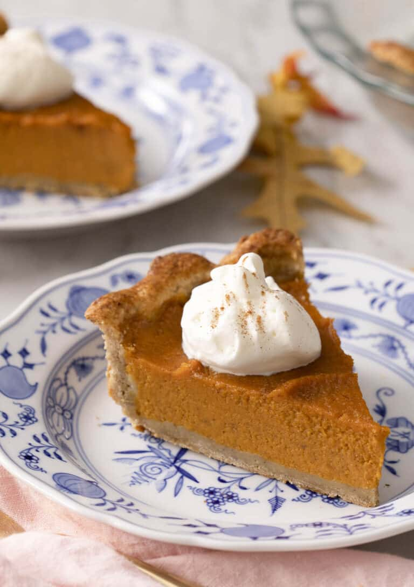

Sweet Potato Pie

If you like pumpkin pie, you'll enjoy this sweet potato pie recipe! Although the ingredients are similar, sweet potatoes are sweeter than pumpkins, resulting in a sweeter and lighter pie filling. It's a great addition to any holiday menu because it's so simple to prepare.
Ingredients
- 2 pounds whole sweet potatoes (900g)
- ¾ cup granulated sugar (150g)
- 1 cup milk evaporated or whole (240mL)
- 2 large eggs
- 2 teaspoons vanilla extract
- 1 teaspoon ground ginger
- ¾ teaspoon ground cinnamon
- ¼ teaspoon ground nutmeg
- 1 (9-inch) unbaked pie crust*
- whipped cream to serve
Steps
- Preheat the oven to 375F. Line a baking sheet with foil.
- Pierce the sweet potatoes in several places with the tip of a knife and place them on the baking sheet.
- Bake for 1 hour or until very soft and the skin wrinkles when pressed. Remove from the oven and let cool for at least 30 minutes. Peel, discard the skins, and mash the sweet potatoes in a large bowl or puree in a food processor for a smoother filling. (Should yield about 2½ cups.)
- Increase the oven temperature to 400F. Position the oven rack in the bottom third. (If using a homemade crust, see notes about blind baking.)
- In a large mixing bowl, combine the roasted sweet potato, sugar, milk, eggs, vanilla, ginger, cinnamon, and nutmeg. Whisk until well combined. Pour into the pie crust.
- Bake for 15 minutes. Reduce the oven temperature to 350F and continue baking for 40 minutes or until the filling is puffed and the center barely wobbles when gently shaken. Let cool completely on a wire rack. The pie can be served at room temperature or refrigerated for up to 24 hours before serving. Serve with whipped cream, if desired. Cover and refrigerate leftovers for up 5 days.